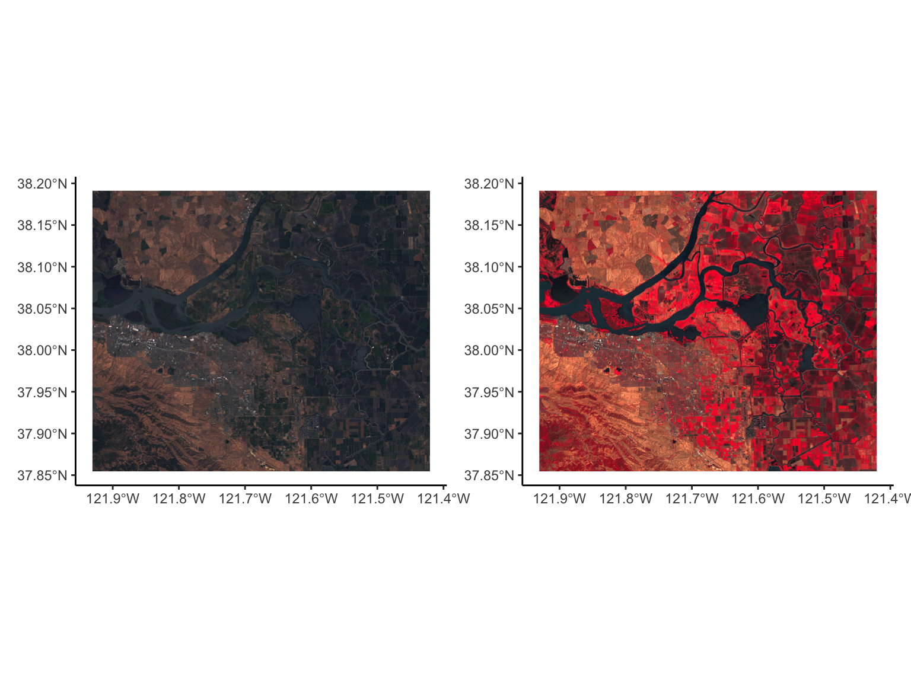
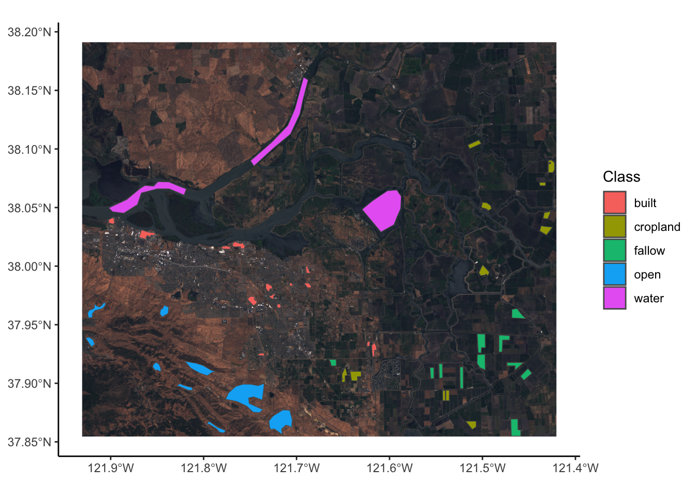
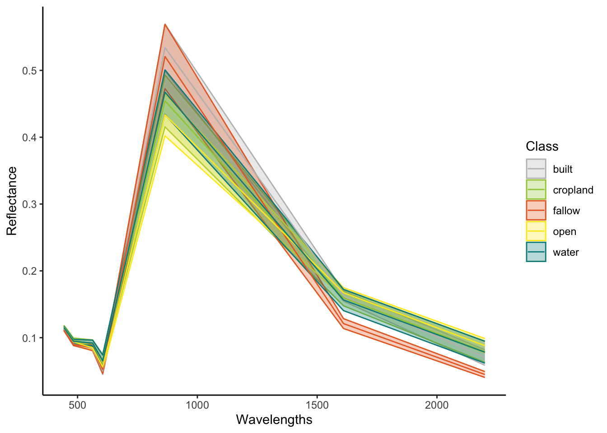
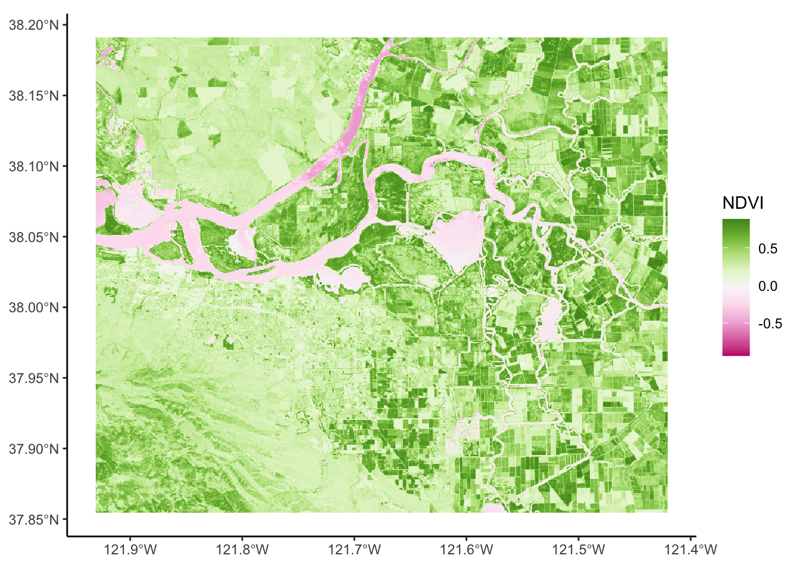

if (!file.exists("data/rs/samples.rds")) {
dir.create("data", showWarnings = FALSE)
download.file("https://biogeo.ucdavis.edu/data/rspatial/rs.zip", dest = "data/rs.zip")
unzip("data/rs.zip", exdir="data")
file.remove("data/rs.zip")
file.remove("data/rs/LC08_044034_20170614_B8.tif")
file.remove("data/rs/LC08_044034_20170614_B9.tif")
file.remove("data/rs/LC08_044034_20170614_B10.tif")
file.remove("data/rs/LC08_044034_20170614_B11.tif")
file.remove("data/rs/centralvalley-2001LE7.tif")
file.remove("data/rs/centralvalley-2011LT5.tif")
file.remove("data/rs/cropped-landsat.tif")
file.remove("data/rs/nlcd-L1.tif")
file.remove("data/rs/nlcd-L2.tif")
}Making Maps from Satellite Imagery
Tidyverse
ggplot2
R
terra
sf
Mapping
GIS
Introduction to using Satellite Imagery for Mapping.
Satellite Imagery 
So we have learnt how to deal with elements of spatial analysis in R using the sf, terra and tidyterra packages. Now we will look into some more advanced spatial analyses. Generally remote sensing is where satellites circling the globe take measurements of reflected radiation while looking at earth, this could be imagery in visible ranges, non visible ranges, combinations of these and many other options. Remote sensing can rapidly cover huge areas (the globe) with varying levels of spatial resolution. Satellite sensors will also have varying levels of what is called spectral resolution.
Spectral Resolution
The Electro-Magnetic spectrum ranges from wavelengths of 1000s (radio) to 10 \(^{-12}\) metres (gamma radiation). Visible light ranges from around 380 to 700 nm (3.8x10\(^{-7}\) to 7x10\(^{-7}\) metres). Human eyes, with our cones and rods, can register four bands of visible light at different wavelengths: 419, 496, 531 and 559 nm. This means we do not see the whole visible spectrum. Depending on the satellite sensor being used they can measure reflectance of a much wider range of radiation and therefore provide important information about the surface of the planet or its atmosphere. Each sensor (like the cones or rods in our eyes) is often called a band and, depending on how many sensors there are and how much of the EM spectrum they measure, will have a certain spectral resolution. The range of satellites and their applications is massive such as, crop monitoring, sea ice mapping, surface temperature measurement, atmospheric properties and geological information. We will focus in this tutorial on multispectral (from around 10 bands) satellite imagery that is easily accessible, free-to-use and has moderate to high spatial resolution (10 - 30 m).
Bring in some example data
We will access some Landsat data from this UCdavis repo. This will create a new folder in your working directory, download the zip file, unzip it and then delete the raw zip file, and also some tifs we won’t be using to free up space.
Within this zip file there are all 11 bands of Landsat. Lets bring them into r using terra, inspect and plot them with tidyterra as we have previously plotted other tif files. We can bring in each file separately, or we can use common naming patterns. We see that tidyterra resamples the rasters to a lower resolution to plot, we can set this value to be higher if we want higher resolution plots with maxcell= and some value greater than 5000000. We will leave it as it is for now to stay quick.
library(tidyverse)
library(terra)
library(tidyterra)
# Blue
b2 <- rast('data/rs/LC08_044034_20170614_B2.tif')
# Green
b3 <- rast('data/rs/LC08_044034_20170614_B3.tif')
# Red
b4 <- rast('data/rs/LC08_044034_20170614_B4.tif')
# Near Infrared (NIR)
b5 <- rast('data/rs/LC08_044034_20170614_B5.tif')
crs(b2,describe=T) name authority code
1 WGS 84 / UTM zone 10N EPSG 32610
area
1 Between 126°W and 120°W, northern hemisphere between equator and 84°N, onshore and offshore. Canada - British Columbia (BC); Northwest Territories (NWT); Nunavut; Yukon. United States (USA) - Alaska (AK)
extent
1 -126, -120, 0, 84res(b2)[1] 30 30ext(b2)SpatExtent : 594090, 639000, 4190190, 4227540 (xmin, xmax, ymin, ymax)filenames <- list.files('data/rs/', pattern="*.tif",full.names = T)
Combined_Landsat<-rast(filenames)
ggplot()+
geom_spatraster(data=Combined_Landsat)+
labs(fill="")+
facet_wrap(~lyr)+
scale_fill_hypso_c("colombia",na.value = NA)+
theme_classic()RGB PLotting
We can combine the bands to make a composite image, these will take different bands for true red green blue imagery, or we can also do a false colour image using the Near Infrared band. We set the maximum value, the default is 255 but our data only range from 0 to around 0.7, but even then the majority is below 0.45 (especially across the b2, b3 and b4) so we shall set 0.45 as the max colour.
library(patchwork)
p1<-ggplot()+
geom_spatraster_rgb(data=Combined_Landsat,
r=4,g=3,b=2,
max_col_value = 0.45,
interpolate=T)+
theme_classic()
p2<-ggplot()+
geom_spatraster_rgb(data=Combined_Landsat,
r=5,g=4,b=3,
max_col_value = 0.45,
interpolate=T)+
theme_classic()
p1+p2
Associating Land Use to Spectral Information
In the zip folder we downloaded earlier someone has also labelled the landcover of specific places in this image. Using this information we can summarise spectral signatures that are associated with specific land uses. This becomes very important when we want to classify new imagery based on just spectral information. (There will be a tutorial on this using machine learning).
samp <- readRDS('data/rs/lcsamples.rds')
ggplot()+
geom_spatraster_rgb(data=Combined_Landsat,
r=4,g=3,b=2,
max_col_value = 0.45,
interpolate=T)+
geom_spatvector(data=samp,aes(fill=class))+
labs(fill="Class")+
theme_classic()<SpatRaster> resampled to 500520 cells.
So we have multiple classes in a shape file and we want to assign all the spectra from the multispectral image to each of those classes. To do this we want to create a look up of which polygon ID is which class, then extract all the spectra for each polygon. We can then assign a class to each spectra.
samp_df<-as.data.frame(samp) %>%
distinct() %>%
rename(ID=id)%>%
mutate(ID=as.numeric(ID))
df <- extract(Combined_Landsat, samp) %>%
left_join(samp_df,by="ID") %>%
drop_na()
head(df) ID LC08_044034_20170614_B1 LC08_044034_20170614_B2 LC08_044034_20170614_B3
1 1 0.1179525 0.09949739 0.09782753
2 1 0.1212055 0.10372625 0.10303228
3 1 0.1157839 0.09604924 0.09422758
4 1 0.1154803 0.09611430 0.09210231
5 1 0.1155670 0.09589744 0.09199388
6 1 0.1153935 0.09542034 0.09236255
LC08_044034_20170614_B4 LC08_044034_20170614_B5 LC08_044034_20170614_B6
1 0.06904963 0.4698801 0.1587231
2 0.08399158 0.4227555 0.1750746
3 0.06755326 0.4363746 0.1689807
4 0.06295574 0.4468708 0.1475329
5 0.06284730 0.4520105 0.1481184
6 0.06367139 0.4496250 0.1490943
LC08_044034_20170614_B7 class
1 0.06698941 cropland
2 0.08737466 cropland
3 0.08184462 cropland
4 0.06037505 cropland
5 0.06067866 cropland
6 0.06165455 croplandEach row in this data frame is a single pixel. Therefore, we can do some grouping to see what the average spectra of each class looks like and how much variation there is between classes. First, we will convert our data into long format, then add the wavelength information for each band into the data. We can do this easily using the tidyverse functions
Wavelengths<-data.frame(Band=c("B1",
"B2",
"B3",
"B4",
"B5",
"B6",
"B7"),
Wavelengths=c(443,
483,
563,
605,
865,
1610,
2200))
df_long<-df %>%
rownames_to_column(var="PixelID") %>%
pivot_longer(-c(PixelID,ID,class),names_to = "Band",values_to = "Reflectance") %>%
mutate(Band=str_remove_all(Band,"LC08_044034_20170614_")) %>%
left_join(Wavelengths,by="Band")
df_long %>%
group_by(class,Wavelengths) %>%
reframe(Reflectance_mean=mean(Reflectance),
Reflectance_sd=sd(Reflectance)) %>%
ggplot(aes(x=Wavelengths,y=Reflectance_mean,colour=class,fill=class))+
geom_ribbon(aes(ymax=Reflectance_mean+Reflectance_sd,ymin=Reflectance_mean-Reflectance_sd),
alpha=0.3)+
geom_line()+
scale_fill_manual(name="Class",
values = c("grey",
"#9fcb41",
"#e86a28",
"#fde825",
"#008B8B"))+
scale_colour_manual(name="Class",
values = c("grey",
"#9fcb41",
"#e86a28",
"#fde825",
"#008B8B"))+
labs(y="Reflectance")+
theme_classic()
Calculating Index from Reflectance
To estimate different elements of growth in terrestrial and intertidal plants, many remote sensing practitioners use indices or band ratios. One very common one is the Normalised Difference Vegetation Index (NDVI). This is the normalised difference between the red (R) and infrared (NIR) bands of a satellite. We can easily calculate the NDVI for our whole image and then plot it. The equation for NDVI is:
\[NDVI=\frac{NIR-R}{NIR+R}\]
NDVI<-(Combined_Landsat[[5]]-Combined_Landsat[[4]])/(Combined_Landsat[[5]]+Combined_Landsat[[4]])
ggplot()+
geom_spatraster(data=NDVI)+
labs(fill="NDVI")+
scale_fill_whitebox_c("pi_y_g",na.value = NA)+
theme_classic()<SpatRaster> resampled to 500520 cells.